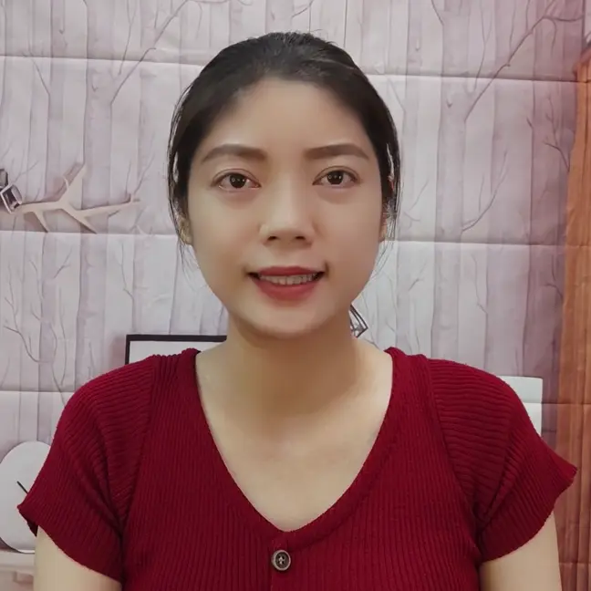
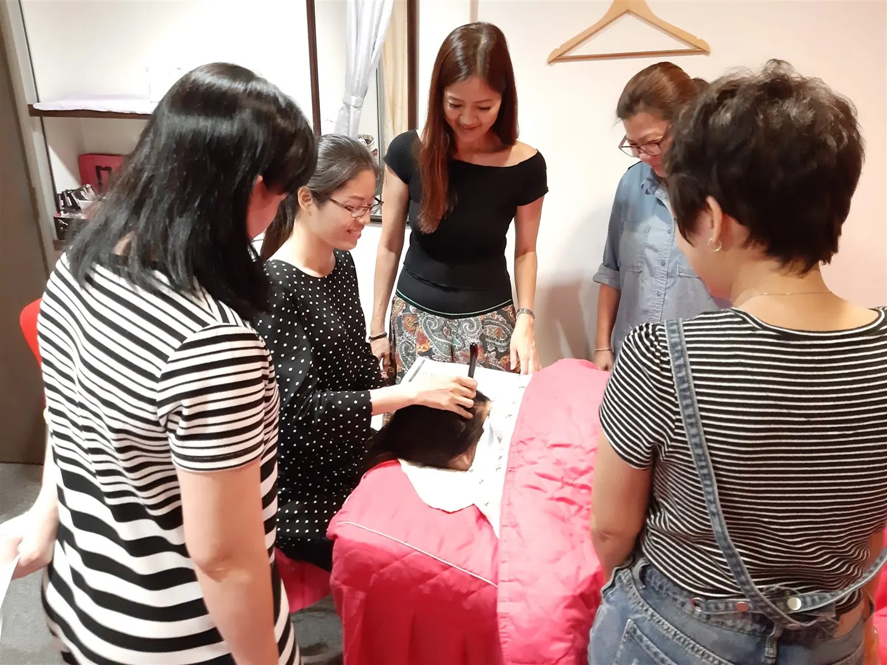
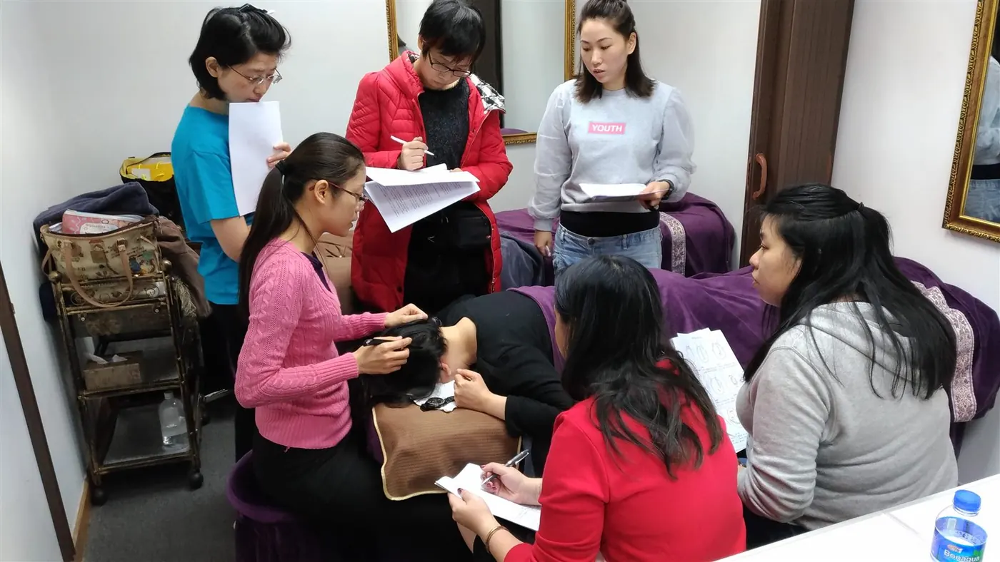

KKit H.
★★★★★The teacher came all the way from Taiwan to teach us in Hong Kong. She taught with such care, so good and so practical. Thank you!
The Bojin Method
🌐 EspañolYu-Ting Lan has taught bojin to more than 1,000 students in Taiwan, Hong Kong and Malaysia. Pick the area that bothers you most. Each one takes about a minute per side, and you can start with your fingertips.
Watch the free 1:18 Above-the-Brow Demo
Yu-Ting shows one step above the brow, close up, at real speed. Email signup on the next page.
Not sure where to start? Take the 1-minute check

Yu-Ting Lan, from Taiwan · bojin instructor
Start with your area
Each guide teaches one line on one area: where it starts, where it ends, and how gently to glide.
Not sure which one fits? The 1-minute Face Tension Profile checks five areas and shows your result on screen.
What the method is
Facial bojin (撥筋) is a hands-on self-care method Yu-Ting teaches from Taiwan. You glide a rounded stainless steel bojin stick, or your fingertips, slowly along one line of the face or neck while your other hand steadies the skin. Each area takes about a minute per side.
Yu-Ting teaches three details: where you start, which way you move, and how much pressure you use. You want enough to reach the tension and never enough to hurt. It won't change your bone structure or erase a line, and it is educational self-care, not medical care.
| Facial bojin | Gua sha | |
|---|---|---|
| Tool | A rounded stainless steel stick, or your fingertips | A flat-edged stone, often jade or rose quartz |
| Movement | Slow glides and small circles along one short line | Longer sweeps across a wider area |
| Other hand | Steadies the skin the whole time | Often free |
They do different jobs, and you can start with the gua sha stone you already own. Read the full guide to facial bojin →
Yu-Ting Lan, from Taiwan · founder of Héhé Studio (和合雅築).
Meet your instructor
I'm a bojin instructor and the founder of Héhé Studio in Taiwan. For years I taught this work hands-on, one face at a time, and watched students who had never touched a beauty tool learn to find the right spot and the right pressure on their own.
My first “client” was my father. He came home from work exhausted and sore, and I’d rub his shoulders until his face softened. I still remember that look.
“At first, almost no one can find the bone edge. They work in the wrong spot, because they’re afraid to press.”Yu-Ting Lan, on new students
When the 2020 pandemic closed my classes, I rebuilt the program online in small steps, with close-up video and practice you can send me for feedback. I want to give you a calm routine you can keep for years.
Credentials
1,000+
students taught, from complete beginners to grandmothers
3
countries taught in: Taiwan, Hong Kong & Malaysia
2020
featured in Taiwan's “Top 100 Brand Stories”
The certificates are in Chinese. Tap one to see it full size. Personal details have been covered.
In the room
Yu-Ting teaches small groups and full classrooms, guiding hands one face at a time until the right pressure feels natural. The online course keeps that close teaching: one area per lesson, filmed up close.

In their words
From Yu-Ting's in-person students in Taiwan, Hong Kong and Malaysia.
The teacher came all the way from Taiwan to teach us in Hong Kong. She taught with such care, so good and so practical. Thank you!
I took the head and face course today. Her careful, patient explanations meant that even I, with no background, picked it up easily. A wonderful class.
It cost me a day off, but I gained far more than a day's worth. Even a rough-handed guy like me could follow it. Highly recommend.
So patient, teaching hands-on. The class was meant to end at 5:30, but she cared so much she kept going until we truly had it. So grateful to have found the right teacher.
These reviews are of Yu-Ting's in-person classes, not of the online course. Translated from the original Chinese. Counts as of November 2026.
Try it tonight
Before you touch your face, look at it. Stand at a mirror in good light, relax your face, and compare the two sides.
Start on the side that looks more tired, and open the guide for that area.
See the method in action
A short clip from one of Yu-Ting's lessons: small circles above the brow. She teaches in Mandarin, with English captions. Watch how slowly her hand moves.
Quick answers
Facial bojin is a hands-on face and neck self-care method taught by Taiwan-based instructor Yu-Ting Lan. You glide a rounded stainless steel bojin stick, or your fingertips, slowly along one line of the face or neck while your other hand steadies the skin. It is educational self-care, not medical care.
About a minute per side for one area. That is the real practice time Yu-Ting teaches, not a promise of how fast you will see a change. Any change is gentle and temporary, and it varies from person to person.
No. You can start with your fingertips, or with the gua sha stone you already own. The free demo, the quiz and the area guides cost nothing.
Gua sha usually sweeps a flat stone across a wider area. Bojin glides a rounded tip along one short line, in a set direction, while your other hand steadies the skin. They do different jobs, and you can use both.
Pick the area that bothers you most from the list at the top of this page. If you are not sure, the 1-minute Face Tension Profile checks five areas of your face and neck and shows your result on screen, with no email needed.
Your first week
These are the numbers Yu-Ting teaches in her classes. New to all of this? The Start Here page walks you through it.

One area. One side. About a minute.
Start today
In the free 1:18 demo, Yu-Ting works the first step of her eye routine, close up and at real speed. Watch her pressure and pace, then try it on one side tonight.
Is your area somewhere else? Choose it here or take the 1-minute check.